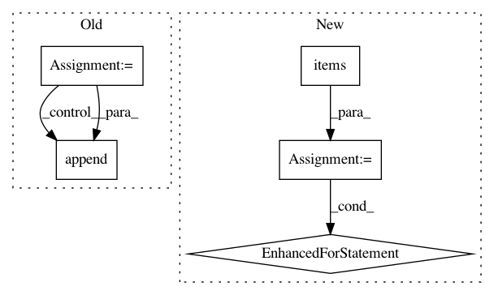

ae0138c4c9921c4280d20c0351d56ad6de448cfb,arviz/data/io_cmdstan.py,CmdStanConverter,_parse_prior,#CmdStanConverter#,150
Before Change
paths = [paths]
chain_data = []
for path in paths:
parsed_output = _read_output(path)
for sample, sample_stats, config, adaptation, timing in parsed_output:
chain_data.append(
{
"sample": sample,
"sample_stats": sample_stats,
"configuration_info": config,
"adaptation_info": adaptation,
"timing_info": timing,
}
)
self.prior = [item["sample"] for item in chain_data]
self.sample_stats_prior = [item["sample_stats"] for item in chain_data]
@requires("posterior")
After Change
attrs = {}
for item in chain_data:
for key, value in item["configuration_info"].items():
if key not in attrs:
attrs[key] = []
attrs[key].append(value)
self.attrs_prior = attrs
@requires("posterior")
def posterior_to_xarray(self):
In pattern: SUPERPATTERN
Frequency: 3
Non-data size: 5
Instances
Project Name: arviz-devs/arviz
Commit Name: ae0138c4c9921c4280d20c0351d56ad6de448cfb
Time: 2020-08-02
Author: ahartikainen@users.noreply.github.com
File Name: arviz/data/io_cmdstan.py
Class Name: CmdStanConverter
Method Name: _parse_prior
Project Name: arviz-devs/arviz
Commit Name: ae0138c4c9921c4280d20c0351d56ad6de448cfb
Time: 2020-08-02
Author: ahartikainen@users.noreply.github.com
File Name: arviz/data/io_cmdstan.py
Class Name: CmdStanConverter
Method Name: _parse_posterior
Project Name: MycroftAI/padatious
Commit Name: a1383be585a1798a3333139c4c1be149d3c5a454
Time: 2017-09-15
Author: matthew3311999@gmail.com
File Name: padatious/util.py
Class Name:
Method Name: resolve_conflicts